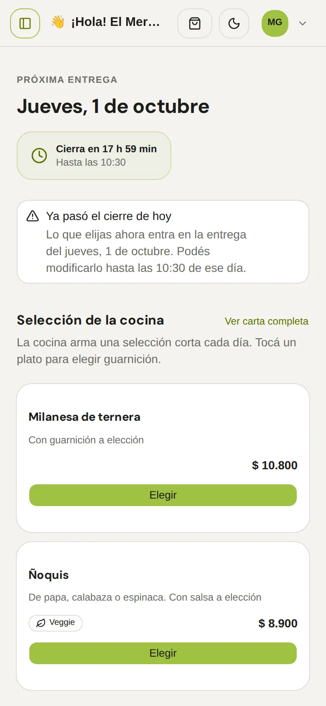
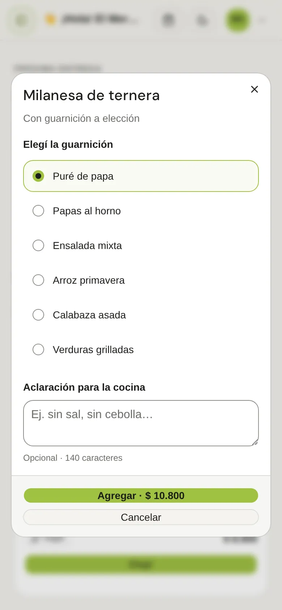
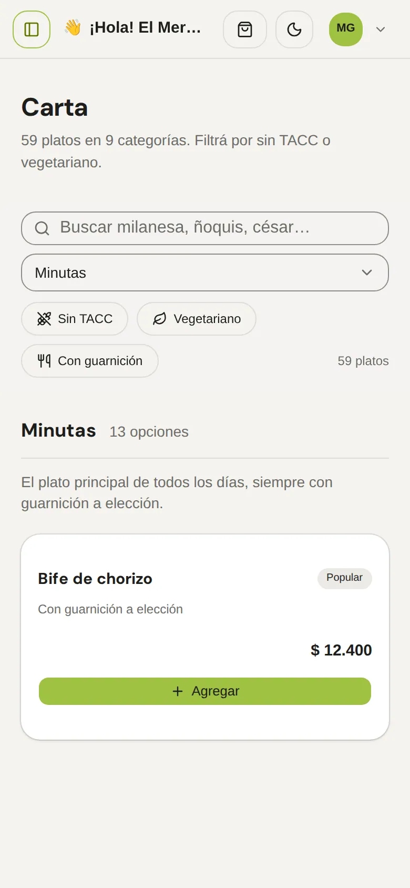
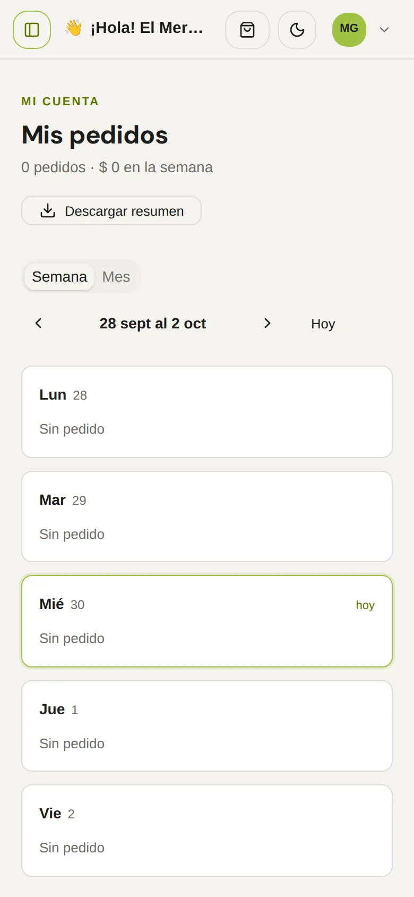
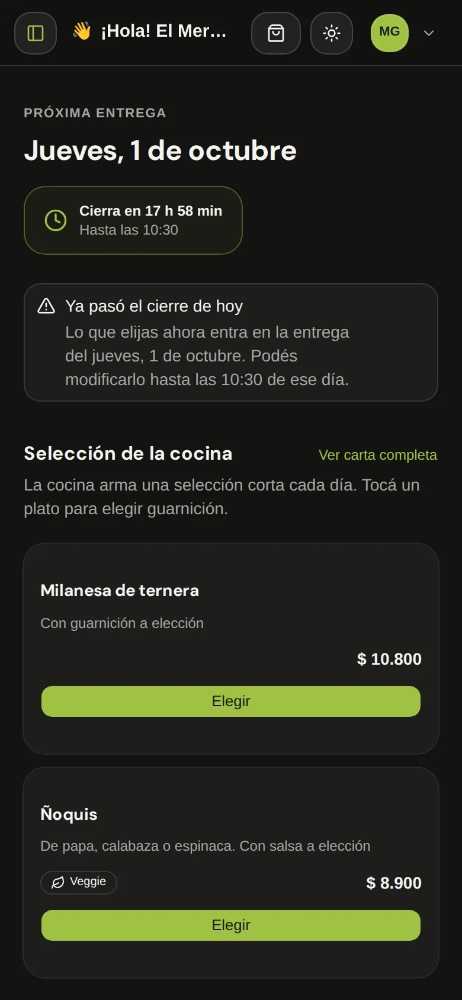

- 01 / 05
The cutoff comes firstPrimero, el horario de cierre
The app opens on the next delivery and a countdown to the 10:30 cutoff. When today’s cutoff has passed, a banner says the order goes to the next delivery.La app abre con la próxima entrega y una cuenta regresiva al cierre de las 10:30. Si el cierre de hoy ya pasó, un aviso explica que el pedido entra en la próxima entrega.
- 02 / 05
Choosing is one stepElegir es un solo paso
A dish opens a sheet to pick the side and leave a note for the kitchen, up to 140 characters. The button carries the price, so there’s no surprise.Un plato abre una hoja para elegir la guarnición y dejar una nota para la cocina, de hasta 140 caracteres. El botón lleva el precio, así no hay sorpresas.
- 03 / 05
The full menu, one link awayLa carta completa, a un link
A short selection first, and 59 dishes in 9 categories behind it, filtered by gluten-free and vegetarian. The company allowance stays visible.Primero una selección corta, y detrás 59 platos en 9 categorías, con filtros sin TACC y vegetariano. El tope de la empresa queda siempre visible.
- 04 / 05
My ordersMis pedidos
The week or the month day by day, with a summary to download. The copy talks the way people in Mercedes do: “Elegí”, “Tocá”, “¿La olvidaste?”.La semana o el mes día por día, con un resumen para descargar. Los textos hablan como se habla en Mercedes: “Elegí”, “Tocá”, “¿La olvidaste?”.
- 05 / 05
Light and darkClaro y oscuro
Both themes come from the same tokens, so the lime accent and the cards read the same at noon and at night.Los dos temas salen de los mismos tokens, así el verde lima y las tarjetas se leen igual al mediodía y a la noche.




